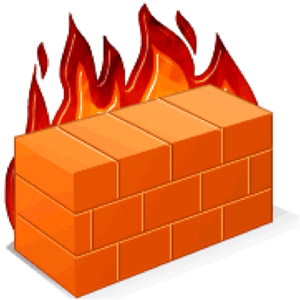
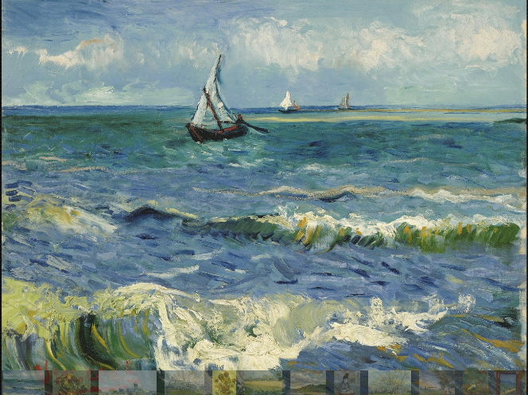

1. Introducción
La práctica de hoy, relativa al tema de actualización del sistema y seguridad, nos permitirá conocer un poco el panel de control, desde donde se gestionan todas las tareas administrativas de Windows 7.
2. Estado de las actualizaciones de nuestro equipo

Accede al Panel de control, Sistema y Seguridad Windows Update y comprueba si hay alguna actualización pendiente de aplicar en el sistema.
- Adicional: Verás que existen actualizaciones importantes y actualizaciones opcionales.
- Adicional: Accede ahora al apartado de actualizaciones automáticas para comprobar cuál es la política de actualizaciones automáticas aplicada a este equipo.
3. Estado del firewall en el sistema
Vamos a comprobar ahora cuál es el estado del firewall en el equipo que utilizáis. Vamos al apartado del panel de control Firewall de Windows.
- Más información: Comprueba el estado del firewall para redes domésticas y para redes públicas.
4. Comprobando el estado del antivirus y anti-spyware

Comprobemos el antivirus que hay instalado en los sistemas UJI, y si está instalado el programa anti-spyware Windows Defender, lo utilizaremos.
- Ves al panel de control, Sistema y seguridad, Centro de actividades. Comprueba si ya hay un programa antivirus instalado, y mira cuál es.
- Comprueba si está instalado Windows Defender, y si es así, realiza un escaneo rápido del sistema.
4. Recortes
Finalmente, os propongo que visitemos unas cuantas webs intersantes, y quiero que me saquéis recortes de todo lo que veáis interesante.
- Busca sitios interesantes que visitar en minube.com y saca recortes de todas las fotos interesantes que veas.
- Han rediseñado la web del Google Art Project. Vamos a visitarla y saca recortes de aquellos cuadros que te resulten más interesantes.
- Finalmente, vamos a visitar la web de Las maravillas del mundo (Google). Saca recortes de los sitios que te resulten interesantes.